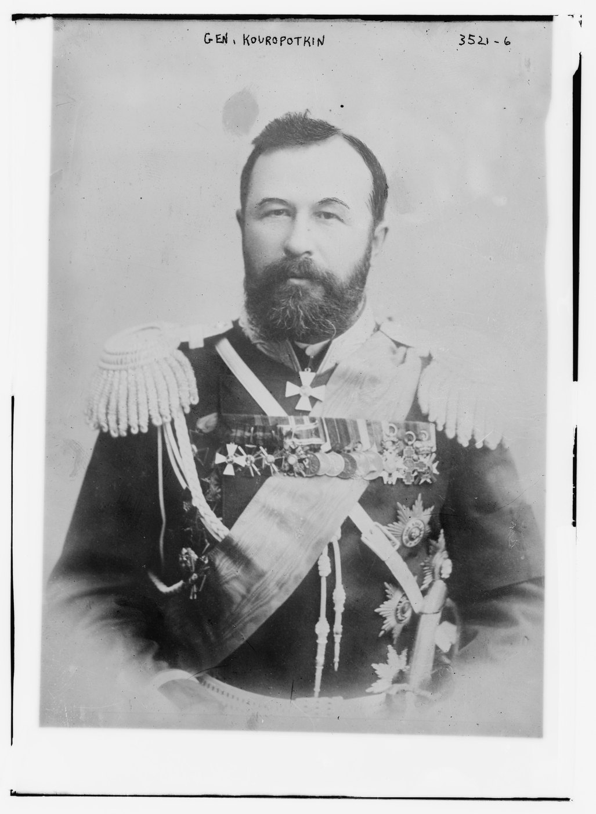

第五章 辽阳会战与南满战线的汇合
向辽阳汇合的几支军队
旅顺围城展开时，日军也在从不同方向接近辽阳。第二军由辽东半岛沿铁路一带北上，第一军从鸭绿江经东部山地推进，野津道贯的第四军则从大孤山、岫岩方向进入两军之间。三条路线分别利用港口、道路和铁路，最终汇向俄军据守的南满交通枢纽。〔1〕

库罗帕特金想等铁路运来更多援军，再集中反攻；远东总督阿列克谢耶夫不断催促他救援旅顺。两人争的是同一批野战兵力。南进或许能够迟滞围城，却也会把尚未集齐的部队带离后援。库罗帕特金战后反复诉说这类压力，借此解释自己的困难。自辩之中仍有一个实情：俄军既想保住南端的要塞，又想在北方从容准备一次会战。 〔2〕
六月十四日至十五日，斯塔克尔贝格南下的部队在得利寺与第二军交战。俄军试图从一侧反击，日军第四师团则向其另一侧迂回，侧翼威胁迫使俄军退出战场。铁路此时既是进军轴线，也是保存部队的条件：增援乘车到达，后卫掩护主力撤离。日军阻止了解围部队继续南下，俄军仍保留了能够加入下一阶段战斗的兵力。〔3〕
东西两路的前置战斗
东路山口决定第一军能否从朝鲜方向进入辽阳周边。日军占据摩天岭一带后，俄军凯勒部于七月十七日试图夺回通路。山区把攻击压缩在有限方向，日方利用既有阵地及增援稳住防线，俄军攻势受挫。山口控制让第一军继续向西接近，也使俄军必须在东部山地保持相当兵力。〔4〕
西路的大石桥则关系到铁路与营口方向的联系。七月二十四日，双方炮兵交战，俄军白昼守住主要阵地；日军随后夜袭部分高地。俄方还担忧侧翼和后路，继而撤离。美国编纂史着重夜间攻击的作用，库罗帕特金则强调整体部署和退路判断。战术压力与指挥者对其他方向的担忧相互作用，使一处尚能抵抗的正面仍可能失去继续坚守的条件。〔5〕
七月底，日军在东西两面继续施压，东路杨子岭等处的战斗中凯勒阵亡，西路俄军退离海城。日军逐步收窄了几支军队之间的距离，俄军则向辽阳收缩。辽阳有铁路、仓库和多层阵地，可以容纳增援并组织反击；雨季泥泞又妨碍道路运输，使双方都更加依赖少数可用通路。〔6〕
正面攻击与太子河桥头
八月二十六日起，第一军从东面攻击辽阳外围，俄军陆续退向主要防线。三十日至三十一日，第二、第四军在首山堡等南面阵地发起强攻，俄军依托工事和炮兵顽强抵抗，日军进展有限。南面的战斗牵住守军，也使黑木可以尝试从太子河上游跨向北岸，威胁辽阳通往奉天的交通。〔7〕
渡河按部队和装备分阶段实施。八月三十日夜至三十一日，第十二师团及第二师团一部步兵先渡，炮兵在三十一日夜随着桥梁条件改善跟进；近卫师团仍承担南岸任务。黑木因而是在主力尚未全部集中时，先把一支能够扩展桥头的部队送向北岸。成功可以动摇俄军后方，进展过快则会使这部分兵力暴露在较大的反击集团面前。〔8〕
库罗帕特金作出应对：让南面部队收缩到较近防线，转移兵力到北岸反击。他自述九月一日准备使用九十三个营，其可用步兵按原书“步枪数”计约五万至五万五千。这是反击集团的战斗人员口径，显示俄军仍有集中兵力打击桥头的机会。能否实现优势，取决于各路到达时间、地形判断和攻击协同。〔9〕
会战规模可以从两组数字看出。美国编纂史估计，日方参加战斗约十四万人，俄方可用于会战约十六万五千人；两项估计的编制与参战范围不同。俄军北岸反击集团，库罗帕特金自述为九十三营、可用步兵按步枪数计五万至五万五千人、三百五十二门炮；美国编纂史的计划汇总则为九十五营、约六万七千步兵与五千骑兵、三百四十二门炮。计划数字与可用数字之间的差距，正是库罗帕特金未能兑现反击的原因之一。
第一军向高粱地、村落和丘陵间扩展，烟台煤矿方向成为争夺地区。煤矿支线位于主铁路以东，日军在这里前进增加了俄军交通受威胁的程度，主要北撤线路此时仍然通行。日本需要继续向西北压迫，俄国则试图利用这一间隙击退渡河部队。〔10〕
反击机会为何没有兑现
九月一日夜至二日，日军夺取馒头山附近要点，俄军从烟台煤矿方向进入战斗的奥尔洛夫部在复杂地形中发生混乱，未能按预期同斯塔克尔贝格部协同。计划中的多路夹击因此变成接续不齐的战斗。部分俄军仍发起有力攻击，黑木也面对桥头受压、增援尚在路途的危险。〔11〕
二日晚至三日清晨的争夺尤为紧张。日军靠继续投入部队、调整阵地和抵抗反击维持北岸立足点。双方都在有限道路上调动，而战场情报未能同步到达各级司令部。第一军与总司令部、其他军之间的电报一度中断，各部判断还依靠较早的进展报告。实际战斗的危险与后方所理解的局势因而存在距离。〔12〕
九月三日，库罗帕特金决定放弃辽阳，退向奉天。按他的解释，北岸反击未达预期，预备队和弹药已有压力，交通又受威胁。继续坚持，仍可能等到北岸反击奏效；若日军桥头继续扩大，撤路又会更加危险。他选择先保存主力。战后，他着重追究各部执行的失误，指挥机关自身的命令、联络和集中时机，同样影响了这个结果。 〔13〕
九月四日，日军进入辽阳，五日仍与俄军后卫交战。第一军的追击也受到抵抗，俄军主力通过仍未被封闭的道路北退。日军夺得枢纽并迫使对手后撤，原先希望通过渡河威胁后路所能取得的更大成果，受到部队分散、疲劳和俄军后卫行动限制。〔14〕
战果与两条战线
辽阳战果的代价可以从日方三军报告看到：美国编纂史转录的损失合计为一万七千五百三十九人。其所录俄总参谋部报告又分别列阵亡、负伤和失踪；俄医务月报采用更宽时间范围。各组记录反映不同统计窗口。共同可见的是，双方都用大量人员消耗换取阵地或退却时间，战后仍需补充才能再发动攻势。〔15〕
八月，第三军总攻旅顺，南满各军准备进攻辽阳；九月，俄军退向奉天，旅顺城外的接近壕还在向前延伸。日本赢得辽阳，仍须同时供养围城与野战两支庞大的力量。俄军丢了枢纽，保住的主力却继续获得铁路增援。下一次会战将由库罗帕特金发起，他要用新到的兵力夺回主动，也想替旅顺减轻压力。
本章注释
- 〔1〕 A003，印页43—57 ↩
- 〔2〕 A201，印页214—219 ↩
- 〔3〕 A003，印页18—22 ↩
- 〔4〕 A003，印页45—48；A201，印页220—222 ↩
- 〔5〕 A003，印页50—52；A201，印页224—225 ↩
- 〔6〕 A003，印页52—61；A201，印页223—228 ↩
- 〔7〕 A003，印页56—69 ↩
- 〔8〕 A003，印页67—68；A202，印页82—89 ↩
- 〔9〕 A201，印页230—233 ↩
- 〔10〕 A003，印页69—75；A202，印页102—109及图XXII ↩
- 〔11〕 A003，印页73—76；A201，印页233—235；A202，印页102—118 ↩
- 〔12〕 A003，印页75—76；A202，印页112—121 ↩
- 〔13〕 A201，印页235—237；A003，印页76—77 ↩
- 〔14〕 A003，印页77—79；A202，印页129—131 ↩
- 〔15〕 A003，印页78—79 ↩